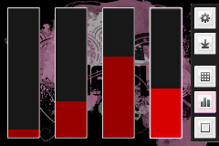
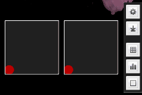

FingerPlay MIDI is a MIDI controller for Android. Any changes made to the controllers on your phone are transmitted over the WIFI network to a receiving computer using either OSC messages or its own FingerPlay format. The MIDI messages can then be sent to any music software capable of receiving MIDI input.
Download FingerPlay MIDI from the Android Market
Get the source code from GitHub.
A FingerPlay MIDI patch for Pure Data by Bérenger Recoules
FingerPlay MIDI Layout Generator by Bruno Molteni
Download and install Java and remember to set the path to Java.
Download and install a virtual MIDI driver like LoopBe1.
Download the FingerPlayServer zip-file and unpack it somewhere on your hard drive. Start it from the command line with:
java -jar FingerPlayServer.jar
The server will display the IP address and port number you need to connect to it from your phone.
Once you’ve connected, select LoopBe1 from the list of available MIDI output devices.
Start Ableton and make sure LoopBe1 is enabled for input in the MIDI settings.
Any changes made to the controllers in FingerPlay will be sent over the network to Ableton as a MIDI Message.
Click the top right button in FingerPlay to go to the settings screen, choose “OSC Server” as the “Server Type” and in “Server Address” enter your computer’s IP address followed by “:8000? (which is the default port for OSCulator).
So if your IP address is 192.168.0.4, enter “192.168.0.4:8000?.
If the phone manages to connect you can back out of the settings screen and play around with the MIDI controllers in FingerPlay which will send messages to OSCulator.
If you see the messages coming through to OSCulator, you can click one of them and set its event type to “MIDI CC” and give it a control change value in the “Value” column. This should be enough to send it to Ableton as long as you’ve enabled OSCulator in Ableton Live’s preferences (enable “track” and “remote” for OSCulator under the “MIDI Sync” tab).
If you create a folder on your sdcard called FingerPlayMIDI and put a file in it called layout.xml, FingerPlay will use that file instead of its own default layout.
Here’s the default layout file:
https://github.com/Goddchen/Fingerplay-Midi/blob/master/client/res/raw/layout_default.xml
Remember to turn off USB storage before starting FingerPlay MIDI or it won’t be able to access the file on the card.